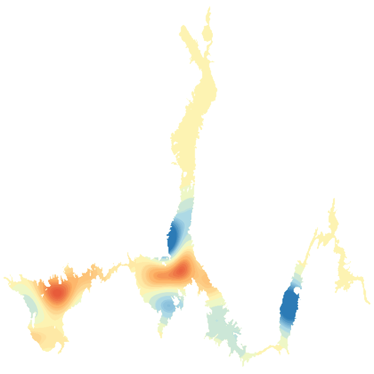

LakeScope › NV
Lake Mead today
Updated 2026-11-26 - Atlas Labs
Clear water, 60°F water, level steady, 30 ft below normal, calm this morning.
Water level
1041.36 ft
Bureau of Reclamation - 2026-11-24
7-day trend: steady (+0.13 ft). Compared with normal for this date: -29.8 ft (same weeks, 2016-2025).
Water clarity and algae
Clear water Last clear view: about a week ago.
Surface temperature
60°F
seen from space on 2026-11-23

Ice
Open - 1% ice cover
Estimate from weather and satellite, not a measurement. Check the ice yourself before going on it.
Weather, next 3 days
| Day | Sky | High / low | Wind | Rain |
|---|---|---|---|---|
| Thursday | Sunny | 67 / 54°F | 6 mph N | 0% |
| Friday | Partly Sunny | 67 / 56°F | 3 mph N | 0% |
| Saturday | Partly Sunny | 69 / 56°F | 3 mph N | 0% |
Sunrise 06:25 - sunset 16:23 - Full moon. National Weather Service.